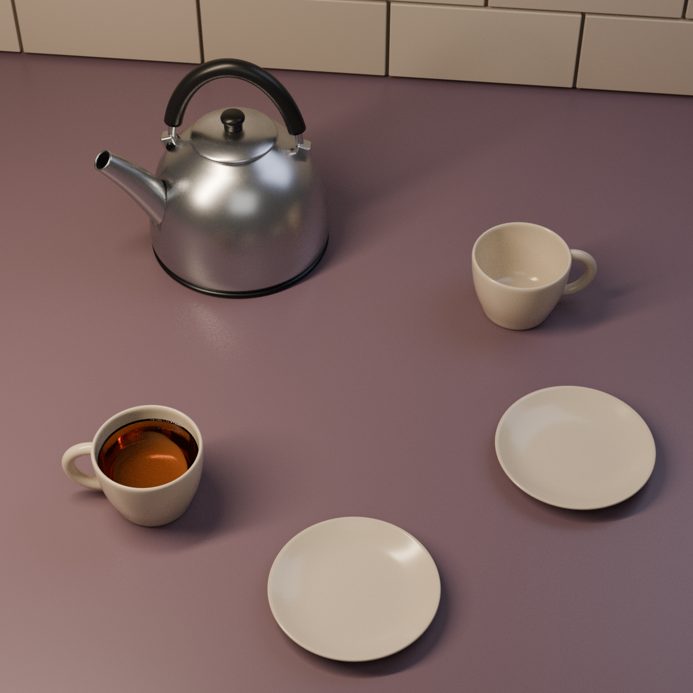
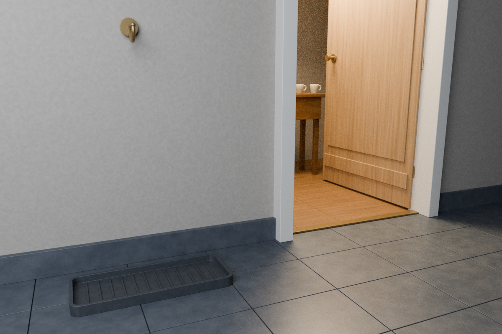
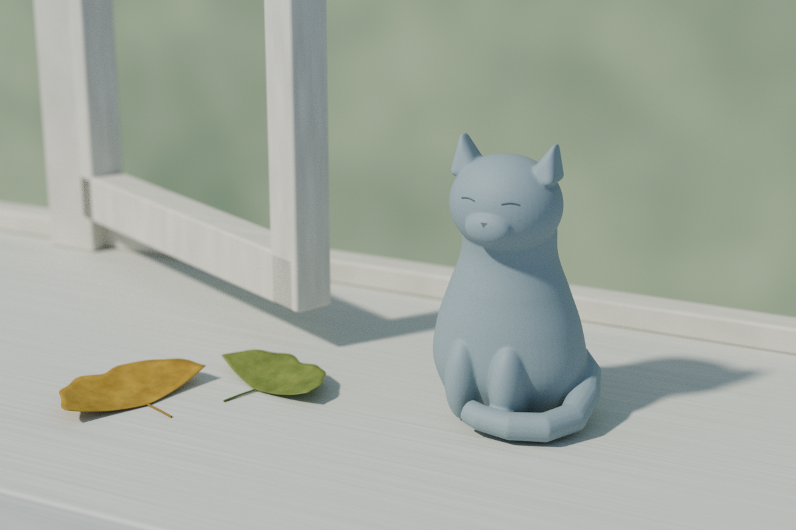

첫째 장 · 기다리는 자리
아직 따르지 않은 차
한 잔에 차를 따르고,
다른 잔은 그대로 두었다.
돌아올 사람의 차가 식지 않도록,
따뜻함의 절반은 주전자에 남겨 두었다.
세 장면으로 읽는 작은 그림책
빈 자리에 남겨 둔 마음에 관하여

첫째 장 · 기다리는 자리
한 잔에 차를 따르고,
다른 잔은 그대로 두었다.
돌아올 사람의 차가 식지 않도록,
따뜻함의 절반은 주전자에 남겨 두었다.

둘째 장 · 문 앞의 여백
문 앞에는 우산을 내려놓을 자리가 있다.
비어 있는 문틈으로,
집 안의 빛이 먼저 마중 나왔다.

셋째 장 · 볕이 드는 자리
비가 지난 자리로 볕이 들었다.
도자기 고양이 곁의 잎 두 장이,
말없이 밝아졌다.
끝.
← → 키로도 넘길 수 있어요.